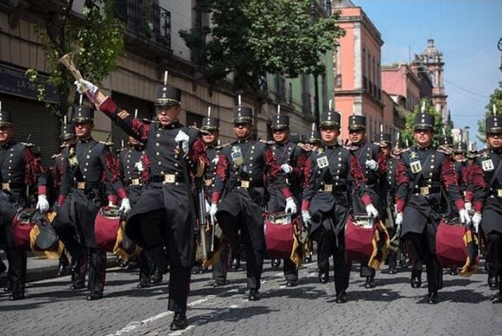
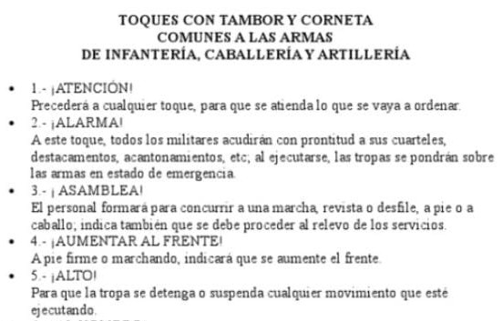
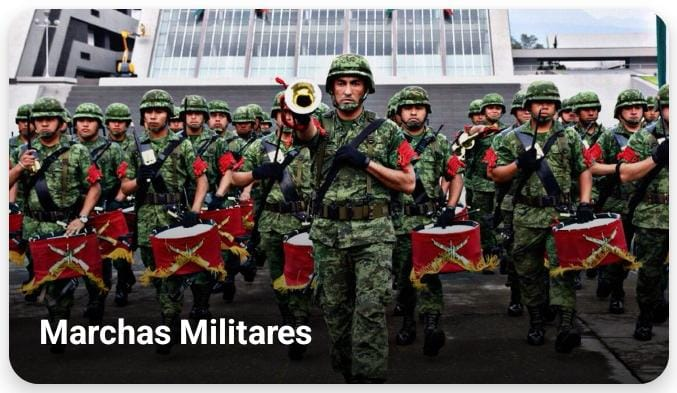
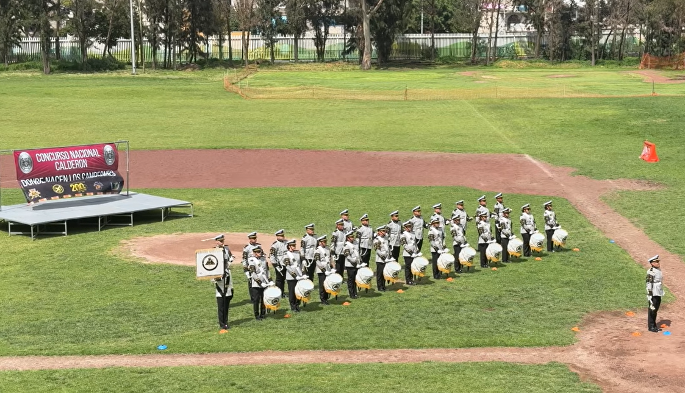

Las Bandas de Guerra

Una Banda de Guerra es un conjunto organizado de personas que interpreta marchas y toques mediante instrumentos de percusión y viento, principalmente tambores y cornetas. Su finalidad también representa disciplina, coordinación, respeto, responsabilidad y trabajo en equipo.
En México, las Bandas de Guerra forman parte de numerosas ceremonias cívicas y escolares. Participan en honores a la bandera, desfiles, actos conmemorativos, concursos y diferentes eventos oficiales.
¿Cuál es su origen?
Las bandas militares surgieron de la necesidad de utilizar sonidos fuertes y reconocibles para transmitir órdenes a grandes distancias. Antes de los medios modernos de comunicación, los tambores y las cornetas permitían indicar movimientos, reuniones y diferentes instrucciones.
Con el paso del tiempo, estos sonidos dejaron de utilizarse únicamente con fines militares y se convirtieron en parte de diversas tradiciones cívicas y educativas.
Elementos principales
Una Banda de Guerra puede estar integrada por una sección de tambores y una sección de cornetas. Además, dependiendo de su organización, puede contar con un comandante y un corneta de órdenes.
El comandante dirige los movimientos generales de la banda. Los integrantes deben mantener la coordinación, una postura correcta y la ejecución simultánea de sus instrumentos.
Valores que desarrolla
La práctica constante puede ayudar a desarrollar disciplina, puntualidad, concentración, coordinación, responsabilidad, compañerismo y respeto. Cada integrante depende del trabajo de los demás.
Instrumentos
Entre los instrumentos más representativos se encuentran el tambor, utilizado para marcar ritmos y cadencias, y la corneta, utilizada para interpretar melodías, marchas y señales. También existen instrumentos como el clarín, empleado tradicionalmente en algunas unidades militares de artillería y caballería.
Marchas
Las marchas son piezas musicales que requieren coordinación entre las diferentes secciones de una Banda de Guerra. Combinan el ritmo de los tambores con las melodías de las cornetas. Su ejecución requiere cadencia constante, buena postura y sincronización.
Toques

Los toques son señales musicales que históricamente permitieron transmitir indicaciones sin necesidad de comunicación verbal. Cada toque posee un ritmo y una finalidad determinada. Aprenderlos requiere memoria, concentración y práctica constante.
Manuales

Los manuales sirven como material de consulta para conocer procedimientos, señales, ademanes, posiciones de los instrumentos y diferentes aspectos relacionados con el orden cerrado y los toques militares.
Manual de Ademanes y Toques Militares 2014
Material de consulta sobre nomenclatura de instrumentos, posiciones, señales, ademanes y ejecución de diferentes toques militares.
Consultar manual →Manual de Ademanes y Toques Militares 1999
Documento de referencia para conocer diferentes toques militares, sus propósitos y señales correspondientes.
Consultar manual →Manual de Instrucción de Orden Cerrado (MIOCI-2014)
Material relacionado con movimientos, posiciones y procedimientos para realizar ejercicios de orden cerrado.
Consultar manual →Concursos
Los concursos de Bandas de Guerra representan una oportunidad para demostrar entrenamiento, disciplina y coordinación. Una buena presentación requiere cuidar la formación, postura, uniformidad, movimientos y trabajo colectivo.
- Categoría Escolar: participan agrupaciones pertenecientes a instituciones educativas de distintos niveles.
- Categoría Libre: participan agrupaciones independientes o equipos altamente competitivos.
- Revista: se revisan presentación, estado de los uniformes, instrumentos y preparación general.
- Orden Cerrado: se observa la coordinación, disciplina y uniformidad de los movimientos en conjunto.
- Toques Militares: se evalúa la correcta interpretación y calidad sonora de los toques establecidos.
- Rutina Libre: permite demostrar creatividad, destreza y dominio avanzado de los instrumentos.
Rutina libre
En una rutina libre, la agrupación presenta una propuesta preparada para mostrar sus capacidades técnicas y creatividad. La coordinación de movimientos, percusiones, cornetas y desplazamientos puede convertirla en una parte muy llamativa.

Referencias
La información presentada reúne material documental, referencias relacionadas directamente con Bandas de Guerra y conocimientos obtenidos mediante la práctica y experiencia dentro de esta disciplina.
- REF. 01 Secretaría de la Defensa Nacional (SEDENA). Manuales oficiales relacionados con Bandas de Guerra, Ademanes, Toques Militares y Orden Cerrado.
- REF. 02 Manual de Ademanes y Toques Militares, ediciones de referencia 1999 y 2014.
- REF. 03 Manual de Instrucción de Orden Cerrado de Infantería aplicado a corporaciones y agrupamientos.
- REF. 04 Organización Nacional de Bandas de Guerra y Escoltas de Bandera (ONBGE).
- REF. 05 Recopilación de información, tradiciones y experiencias en Bandas de Guerra y Escoltas de Bandera por Silem Campero.
- REF. 06 Proyecto educativo y cultural: El Mundo Bandero.